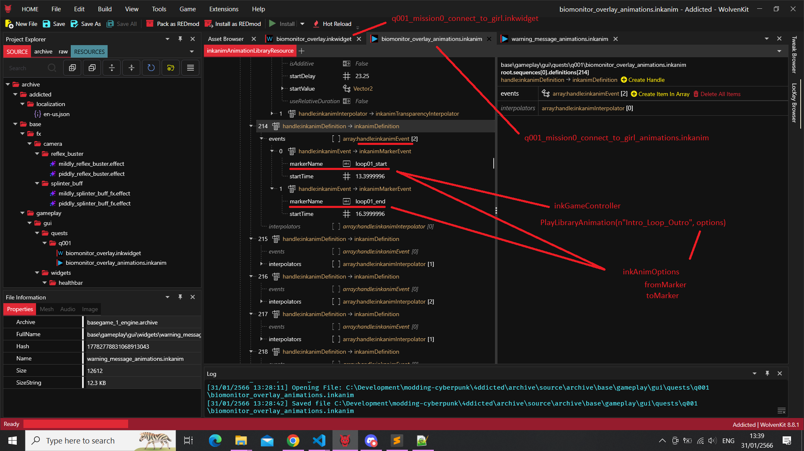
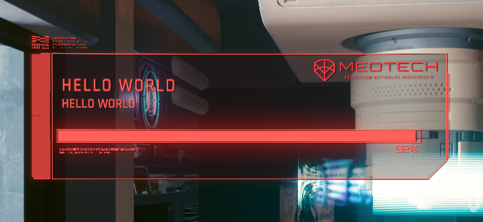

2023-01-31
Research on UI: follow-up
So after many failed attempts, here's the complete solution:
First it happens that q001_mission0_connect_to_girl.inkwidget and its counterpart q001_mission0_connect_to_girl_animations.inkanim actually contains markers. These markers are named timeframes, useful to play only part(s) of the whole sequence.
Of course the .inkwidget contains the graphic UI component, like in a web frontend. The .inkanim contains 2 arrays fields containing:
- in
definitions: the effects (or interpolations) to play - in
targets: the path to a nested child in the widget treeliterally the path:
[0,1,0,7]would be the child at index 0, his child at index 1, so on and so forth...
These arrays both match: the engine probably apply to target the definition of the interpolations, one after another till done.
It can be verified by exporting the .inkanim to JSON and searching for markerName.
Here's how it looks like in WolvenKit:

But for this particular anim, there's only 2 markers: loop01_start and loop01_end,
which I assume correspond to the moment where it loops while the game wait for the player to choose his/her next action.

Well, a solution is again to clone the .inkwidget and .inkanim files, and rename them to one's liking.
Then, the trick is to export .inkanim to JSON, open it in your favorite IDE, copy entry with the markerName, paste it at the end of the array and edit it by adding as many marker names and start time as needed. Once done, don't forget to convert from JSON back.
But both arrays definitions and targets sizes have to match: go to target, copy the entry at the same index as in definitions and paste it at the end of array using the same process as previously.

// or import cp2077-codeware library instead
// required for compilation
@addField(inkWidget)
native let parentWidget: wref<inkWidget>;
// Spawn the widget on load
@wrapMethod(NameplateVisualsLogicController)
protected cb func OnInitialize() -> Bool {
wrappedMethod();
let root = this.GetRootCompoundWidget().parentWidget.parentWidget.parentWidget;
// this line takes care of instantiating our inkWidget and attach it our inkGameController below
this.SpawnFromExternal(root, r"base\\gameplay\\gui\\quests\\q001\\biomonitor_overlay.inkwidget", n"Root:MyController");
}
// Custom controller with your logic
public class MyController extends inkGameController {
protected cb func OnInitialize() {
// conveniently, PlayLibraryAnimation accepts an optional inkAnimOptions
let options: inkAnimOptions;
// with properties like fromMarker, toMarker, and more
options.toMarker = n"loading_end"; // my custom marker
let root: ref<inkCompoundWidget> = this.GetRootWidget() as inkCompoundWidget;
let panel = root.GetWidget(n"main_canvas/Booting_Info_Critica_Mask_Canvas/Booting_Info_Critical_Canvas/Booting_Screen/BIOMONITOR_DATA_PANEL_text") as inkText;
let booting = root.GetWidget(n"main_canvas/Booting_Info_Critica_Mask_Canvas/Booting_Info_Critical_Canvas/Booting_Screen/BOOTING_Text") as inkText;
panel.SetText("HELLO WORLD");
booting.SetText("HELLO WORLD");
// custom .inkAnim name to target our modified version with custom markers
this.PlayLibraryAnimation(n"Biomonitor_Overlay_Intro_Loop_Outro", options);
}
}
and boom !

Nice :)
Some additional informations in follow-up.
credits
psiberxDJ_Kovrik